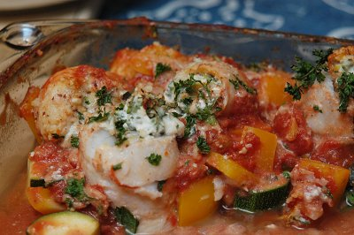

| Zutaten für 4 Personen: | |
| 8 Stück (600 g) | Flundernfilets oder Egli, Felchen, Soles und Rotzungen |
| Füllung: | |
| 250 g | Ricotta |
| 1 Bund | gemischte Kräuter (z.B. Dill, Schnittlauch, Petersilie, Basilikum) fein geschnitten |
| oder | |
| 1 Päckli | Cantadou |
| 1/2 Tl | Salz |
| Pfeffer | |
| Gemüse: | |
| 2 | Zucchini |
| 1 | gelbe Peperoni |
| 2 | Schalotten |
| 1 Dose à 400 g Abtropfgewicht | gehackte Pelati |
| 1/4 Tl | Salz |
| 1 Messerspitze | Cayennepfeffer |
| Pfeffer aus der Mühle | |
| 2 El | Kapern |
| Belag: | |
| 2 El | geriebener Parmesan |
| 2 El | gemahlene Haselnüsse |
| 1/2 Bund | Petersilie, fein gehackt |
| 1 | Zitrone, nur abgeriebene Schale |
| Beilage: | |
| Reis, Linsen, Salz- oder Schalenkartoffeln, Nudeln | |
Ofenfeste Form fetten.
Die Zucchini und Peperoni in 1/2 cm grosse Würfel schneiden und in eine ofenfeste Form geben. Die Schalotten fein hacken und mit den gehackten Pelati in die Form geben.
Ricotta mit den gehackten Kräutern mischen. Fische mit Salz und Pfeffer würzen und mit Ricotta Mischung oder Cantadou auf der silbern schimmernden Seite belegen. Fischfilets aufrollen und mit Zahnstocher fixieren.
Den Ofen auf 220°C vorheizen.
1/4 Teelöffel Salz, Cayennepfeffer und Pfeffer zugeben. Mit den Kapern gut mischen. Die Fischröllchen mit der Nahtseite nach unten hineinlegen.
Parmesan mit Haselnüssen, Petersilie und Zitronenschale mischen und über die Fischröllchen streuen.
15-20 Minuten in der Mitte des Ofens bei 220°C gratinieren.
Die Beilage zubereiten.
Betty Bossi, Leichte Küche, Seite 56. Siehe auch Gerollte Felchenfilets à la Provençale
Wunderbar! Richard Eigenmann, 5.12.1999, Schmeckte auch am 4.2.2005 in Adelboden nach dem Skifahren sehr zufriedenstellend.